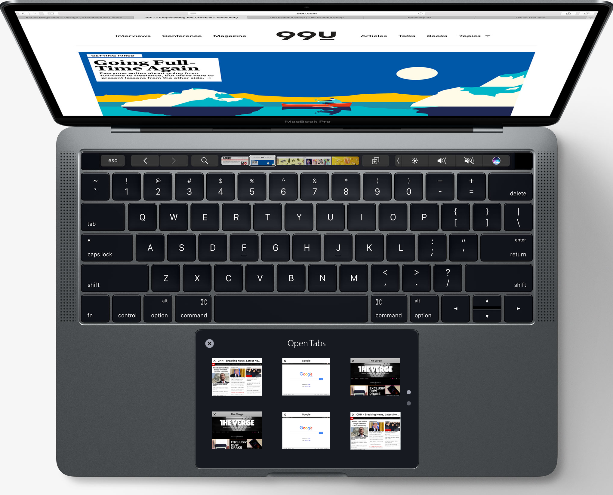

Retina TouchPad
The Idea:
Apple in it's recent release of the new MacBook Pro laptops introduced a touch bar. It is a HD OLED display that is touch capable. It is a neat solution to add functionality to the function key role which it replaced.
My idea is to create some UI concepts of what would happen if Apple replaced the trackpad, which takes up a significant surface area of the laptop and turns it into a display as well.
Analyzing most common features of popular applications on a laptop:

Preliminary sketches on how some of the common features of popular apps may look like on the Touch Pad:

UI Design for TouchPad: Browser Example

In this example, while the browser is open, the user could use the pinch genture to bring up all the tabs open on the browser. This would allow the user to still be able to see the current tab while allowing the user to either close some other tab or switch to a different tab.
Here is how the UI would behave using the pinch gesture:

Research: User Preference in Interacting with Touchscreen Devices
In order to understand how users prefer touchscreen input devices versus traditional input devices such as a mouse, I had to look at research done on this topic. I came accross this research paper from University of Houston where the researchers had 48 participants use 4 different types of devices - a Desktop, a Laptop, an iPad and an iPod. The results of the data are very interesting and certainly show when and where users prefer using a touchscreen interface and where they prefer using keyboard and mice.
I will be focusing on Desktop, Laptop and iPad data as it is most relevant to the TouchPad design.
First we look at data collected on the preference of position while using these devices. There were 5 positions available to the participants:
- Desk Inclined
- Desk Declined
- Desk Flat
- Lap
- Chest Level
We see that the data from using the Desktop is very different than that of the Laptop and iPad and this is understandable. The desktop has a very different form factor and it is primarily used with keyboard and mice. However let's focus on the data from the Laptop and iPad as it best addresses our design problem.
We very clearly see that as users move from typing-heavy tasks to task which require more free movement during interaction with the device, users naturally have increasing preference towards devices in either the declined or flat positions. This adds to our argument that using the trackpad as another touchscreen input device would allow users to better use their laptops, especially in cases where they need to input in a free flowing 2D space, e.g. Browsing, Drawing, etc.
Next let's look at data about preference of using Touch for input versus Mouse for input.
The data here shows that when users are not typing they tend to more depend on using touch for input than the mouse. This may be related to how the users may have been trained over the years to use the keyboard and mouse together. It can also partly be muscle memory. But once they start using touch for input, we can see a varied mix use of touch and no touch. In many cases both touch and the mouse are used.
This brings me to my final point regarding this study. The preference of position and touch versus non-touch input clearly shows that users prefer to use touchscreen devices in a flat or close-to-flat position. The data also shows that users more often prefer using touchscreen than only using a mouse and in some cases prefer using both touchscreen and mouse together! This is the best argument that can be made for a trackpad (mouse) - which is always flat - that has a touchscreen display built right into it. This allows for the user to use both a touchscreen and mouse at the same time, given an appropriate adaptive UI is available.
Here is my demo use of a trackpad with a display one more time to drive the point home:
Ergonomics of using a laptop with touchscreen display
These sketches show where and how the user might feel discomfort using a display that is also a touchscreen. In the first sketch, we see the user may use the touch screen by simply raising the arm. This action however will cause a sizeable force on the laptop screen which may cause it to slightly tilt or wobble.
In the second sketch we see that the user is resting his/her elbow while raising the arm to touch the display. Prolonged use of this posture might cause pain in the elbow for the user. Also the frequent switch from position in first sketch to position in second sketch can be cause for discomfort.
Finally in the third sketch, the user lifts his/her arm completely while touching the display. This will translate to a significant force on the display that might cause it to tilt more and wobble more. Also by hovering his/her arms in such fashion, the user will quickly feel pain and discomfort in the shoulder area. Long term use of this posture may lead to other shoulder joint pain and muscle pain.
These are some of the important reasons why instead of a touchscreen display, users should use a trackpad that has a touchscreen built into it. This would prevent the users from moving their arms too much from typing or pointing (using the track pad) to using the touchscreen for doing different activities that are easier to do using a touchscreen than a mouse or trackpad.
UI Layout and Components
UI Navigation
This diagram above gives a summary of the navigation an user can expect on the UI of the touch pad. The navigation ties in with the layout from the previous section. Each gray box in the diagram represents a particular screen on the touch pad.